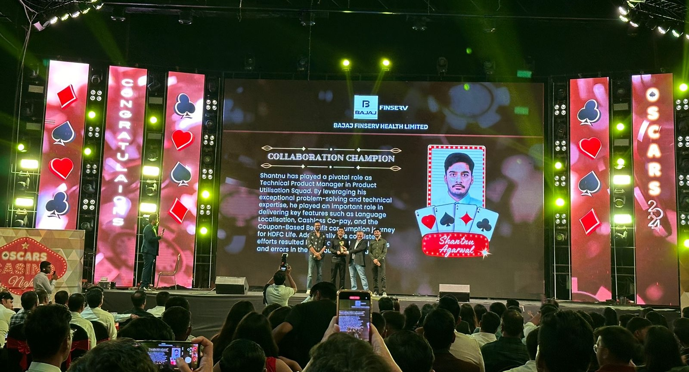
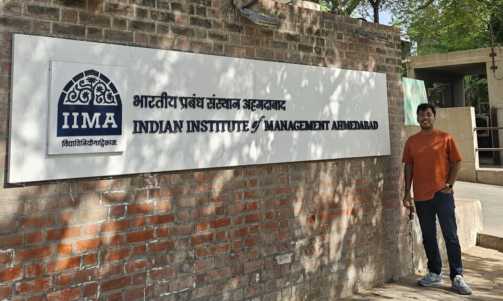

Building for millions.
Led the delivery of a large-scale health-insurance software platform for an Indian state government, supporting 7 million covered lives and 2 million claims.
Read case studyCurrently at IIM Ahmedabad · India
I build products, explore ideas, and enjoy figuring out how things work.
I'm an engineer turned product manager, currently pursuing my MBA at IIM Ahmedabad. I've spent nearly five years building technology products, working with people across disciplines, and solving problems that sit somewhere between technology and business.

A little about me
I started out as an engineer, wrote a lot of code, and gradually found myself more drawn to the “what” and “why” behind what we build. That led me into product management, where I've spent the last nearly five years building and scaling technology products in the healthtech and insurance space.
Read my storySelected work
Led the delivery of a large-scale health-insurance software platform for an Indian state government, supporting 7 million covered lives and 2 million claims.
Read case studyOwned a core insurance customer journey as monthly claims grew from around 2,000 to over 100,000, supporting more than 800 product configurations.
Read case studyWorked across business, operations and technology to automate complex insurance rules and address underlying business problems.
Read case study
Current chapter
After nearly five years in the industry, I decided to go back to the classroom. I'm currently pursuing my MBA at IIM Ahmedabad, exploring strategy, economics, marketing, leadership, and the different ways businesses succeed—or fail.
I'm also involved with the Product Management Club as its Placement Cell Head, helping fellow students prepare for careers in product management.
Notes
I tend to go down rabbit holes. Sometimes they're about a new technology. Sometimes they're about why a business made a particular decision.
This is an evolving collection. Some ideas will be fully formed, others might just be questions I'm still figuring out.
Beyond work
I'm probably exploring a new place, taking photographs, experimenting with some gadget, flying my drone for fun, playing music, or finding another topic to obsess over.
Explore life beyond workAn idea, a product challenge, an interesting opportunity, or just a good conversation. I'm always happy to connect with curious people.
Get in touch